Describe a requirement in plain language. It is refined into a domain-driven design (DDD) with acceptance criteria and planned by your project's design principles. Claude Code on your PC builds it in an isolated workspace, and an accepted change updates the code and the design graph together.
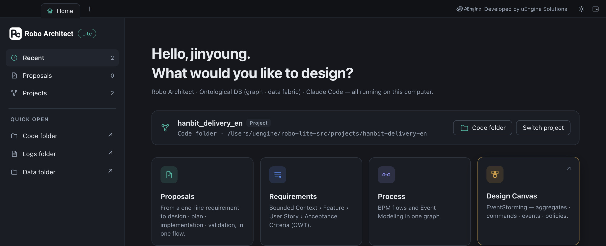
pp. 3–15
Background · deliverables · strengths
pp. 16–17
Runtime · tech stack · skills
pp. 18–19
Real product screens · 6 steps
pp. 20–24
Security · installation · track record · schedule
AI writes code fast, but reviewing and fixing that code takes time too. Clear requirements, business context and acceptance criteria are where effective use of AI begins.
Source: METR, randomized controlled trial (2025). Measured with the tools and working environments of that time.
AI needs the organization's business rules and terms. If they are not organized, people re-explain them in every chat, and gaps lead to wrong code.
Generated code still has to be checked against the requirements. Without clear acceptance criteria, review rests on judgment and takes longer.
Experienced developers fill gaps in a spec from domain knowledge. AI without that context can miss the intent, so requirements must be made concrete first.
Decisions and reasons left in chat history are hard to find later. Kept with the requirements, they survive handovers and can be reused.
Robo Architect connects three methods: spec-driven development (SDD) defines requirements, behavior-driven development (BDD) describes expected behavior, and domain-driven design (DDD) sets the boundaries of business areas and their terms.
Write the purpose and requirements, then the implementation plan and task list. AI and developers work from the same spec.
State condition, action and result: “withdraw $20 from $100, leaving $80.” These become acceptance criteria.
Draw domain boundaries from business concepts and rules, with clear terms and duties for each area.
| Format | Example — ATM withdrawal | What is still missing |
|---|---|---|
| User story | “A customer can withdraw cash.” | Exceptions such as a low balance, and how to handle them |
| Requirements spec | “Authenticated users can withdraw cash.” | Authentication, withdrawal limits and behavior on failure |
| Detailed design | if balance >= amount: balance -= amount |
Hard for non-developers to review |
| BDD scenario | Given $100 · When $20 is withdrawn · Then $20 is paid out, $80 remains | Business and developers check one example |
File-based specs suit one team's requirements and plans. But once information spreads across teams and repositories, aligning terms and tracing the impact of a change get harder. Four issues need managing together.
| Issue | Cause | Effect on the work |
|---|---|---|
| Scattered specs | Specs live inside each repository | Other teams' work is hidden, so features get built twice |
| Inconsistent terms | Each repository defines its own terms | Is a “subscriber” the same as a “customer”? Someone must check |
| Impact analysis | Links exist only as document links | A regulation change means checking documents and code by hand |
| Knowledge handover | Knowledge sits with people and chat logs | Handovers lose knowledge or repeat analysis |
| Aspect | File-based specs | Graph-based specs |
|---|---|---|
| Where specs live | Markdown files per repository | One domain graph per project |
| Boundaries | Repositories and folders | Bounded contexts (business areas) |
| Terms | Each repository its own | Managed per domain, with relationships |
| Change impact | File search, asking the owners | Traced along links, with conflict risk |
| Criteria | Written in documents | Given · When · Then linked to the design |
| Knowledge | Per-project files | Design elements linked to change history |
Robo Architect Lite is a desktop AI architecture workbench for spec-driven development. It refines requirements into a DDD design with acceptance criteria and plans by your design principles. Claude Code implements in an isolated workspace.
A sentence or a pasted requirements document. Existing code and DBs can serve as evidence.
Contexts, features, stories and criteria, then aggregates, commands, events and architecture.
Code on a dedicated branch with validation results. Accepting updates branch and graph.
| Document-centered design | Robo Architect Lite | |
|---|---|---|
| Design form | Diagrams and documents | Queryable graph (26 node, 32 relationship types) |
| Unit of change | Separate tickets and documents | One proposal, from requirement to validation |
| Standards | Documents kept by individuals | Each plan decision cites a design principle |
| Implementation | Separate from the design | Claude Code, in an isolated branch workspace |
| Validation | Reviewer's judgment | Criteria and structure checked, with evidence |
| AI procedures | Personal prompts | Steps and rules in 21 skill files |
A proposal's design is stored in the project graph. Each project is its own graph inside the graph DB (Ontological DB), so designs stay separate, however many projects you create.
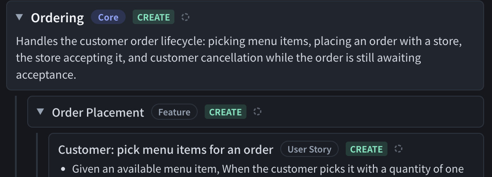
| Layer | Nodes |
|---|---|
| Requirements | Requirement · Feature · UserStory · Given/When/Then (acceptance criteria) |
| Strategic design | BoundedContext (classified as Core · Supporting · Generic) · Policy |
| Tactical design | Aggregate · Command · Event · ReadModel · Property · Invariant |
| Screens · flows | UI · Journey · JourneyStep |
| Changes · standards | Proposal (PRO-NNN) · Constitution (project design principles) |
Every stage of a proposal leaves a record. To learn later “why does this aggregate exist?”, open the proposal and see the requirements, the plan's reasoning, the commits and the validation results together.
| Stage | Deliverables | Where it is kept |
|---|---|---|
| INTENT | Strategic design (processes · contexts · features · stories · criteria), Impact Map | Proposal |
| Principles | Markdown: Core Principles · Technology Constraints · Architecture · Repository Strategy · Governance | Project graph (one per project) |
| PLAN | Tactical design, architecture decisions and their principles, open areas, impact analysis | Proposal |
| Build | Tasks by phase, one commit per task | proposal/PRO-NNN branch |
| Validation | PASS · FAIL · SKIP cards with their evidence | Proposal |
| ACCEPTED | Merged code, updated design graph, status history | Target branch · project graph |
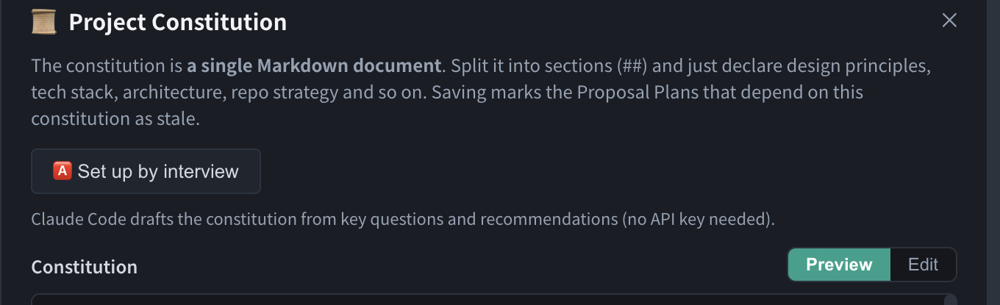
npm test after mergeEight feature cards on Home open each screen as a tab. The Requirements, Process, Design and Data tabs show one project graph in different views. Real product screens with demo data (tutorial exercise).
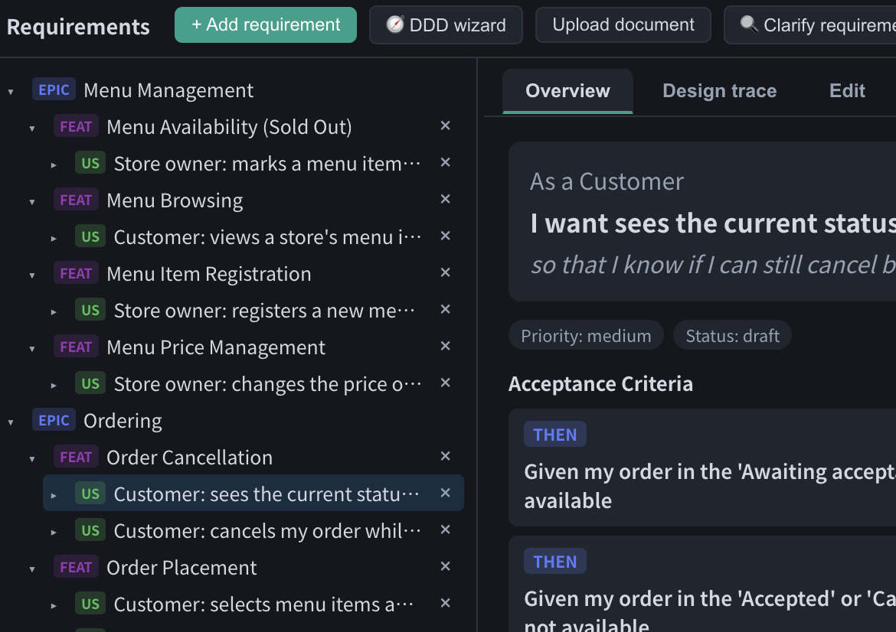
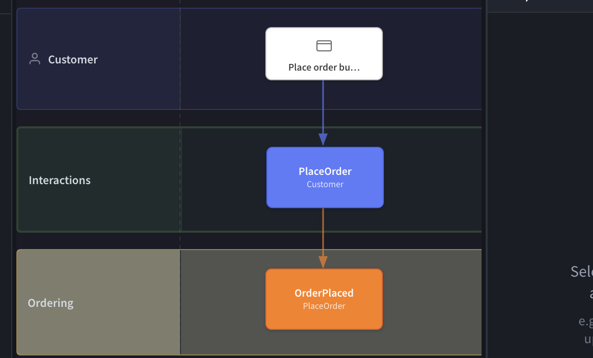
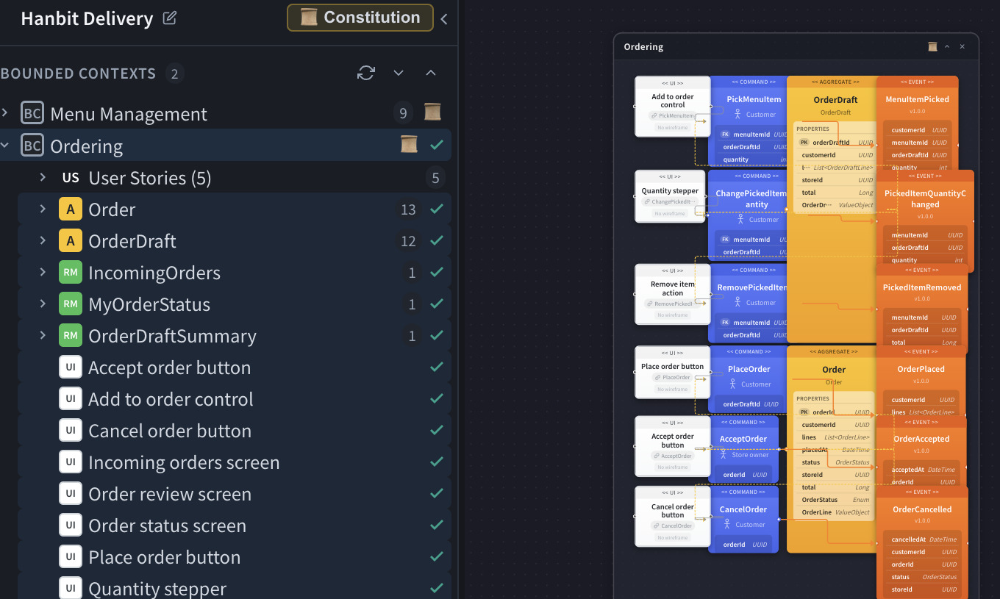
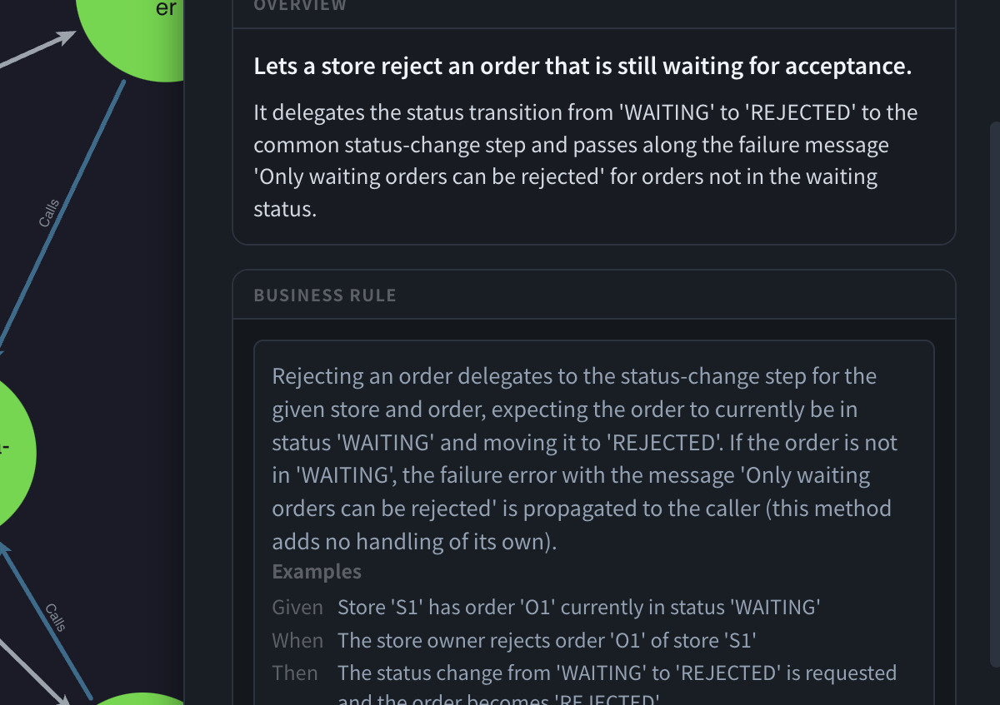
| Card | What it does | Card | What it does |
|---|---|---|---|
| Proposals | Requirement to validation | Data Model | Entities · value objects |
| Requirements | Context › feature › story | Code | Files · Claude Code terminal |
| Process | BPM · Event Modeling | Legacy · Data Sources | Code analysis · existing DBs |
| Design Canvas | EventStorming canvas | Project Constitution | Design principles · interview |
Written requirements often miss exceptions and edge cases. Claude Code follows the INTENT skill to refine a requirement into processes, bounded contexts, features, user stories and acceptance criteria, so you can review edge cases the sentence never mentioned.
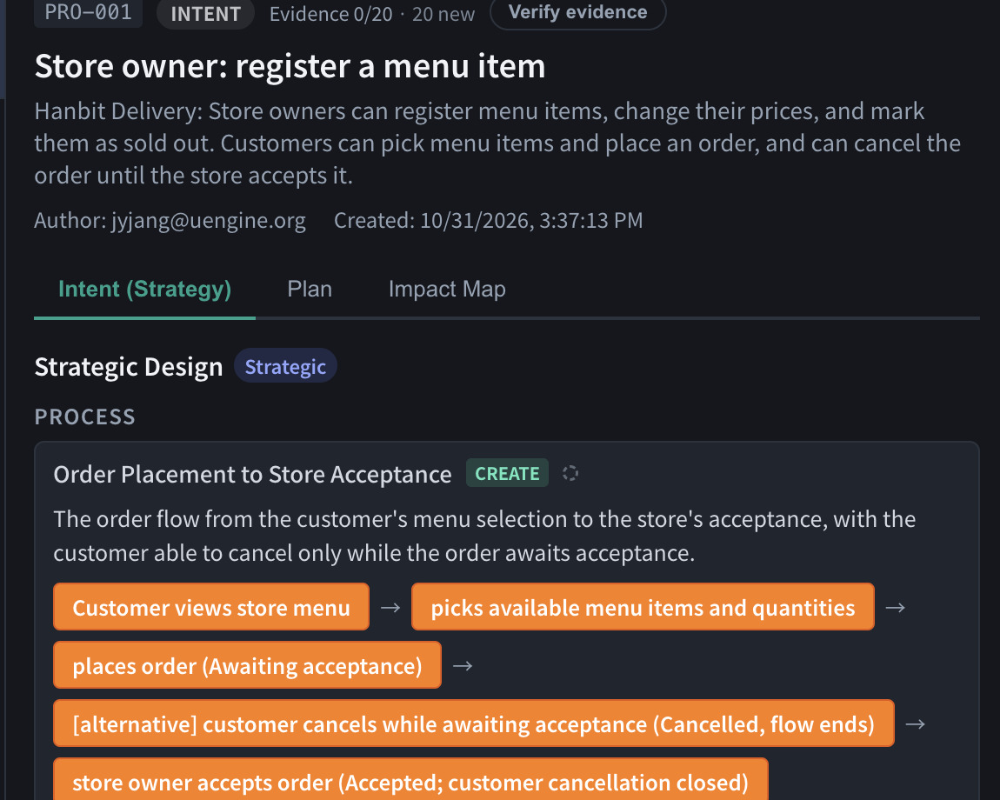
| Result (127 s) | Content |
|---|---|
| 2 processes | Order Placement to Store Acceptance · Menu Upkeep |
| 2 contexts | Ordering (Core) · Menu Management (Supporting) |
| 7 features | Menu Item Registration, Order Placement and others |
| 9 stories | Store owner 4 · customer 5, each with criteria |
| Mode | How it works |
|---|---|
| Simplified | INTENT → PLAN in two stages, for changes with a small impact |
| Detailed DDD | Six stages, Discover → Decompose → … → Tactical, confirmed one by one |
| ODA Standard | Designed on the TM Forum ODA standards, with a conformance check |
The same feature gets different plans under different stacks and architecture styles. Deciding these anew for each proposal leads to inconsistent structures, so Robo Architect keeps one design principles document (Constitution) per project, and every plan follows it.
| Question | Reason for the recommendation | Answer chosen |
|---|---|---|
| Architecture style | Two contexts joined at one point: a modular monolith keeps them apart at low cost | MONOLITH (recommended) |
| Tech stack | Order rules need transactions; Spring Boot with PostgreSQL was suggested | Typed in: Node.js (Express) · React · SQLite |
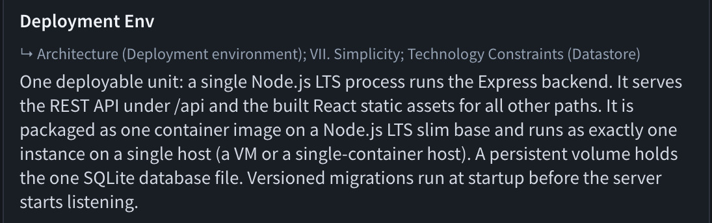
| Decision | Content | Based on |
|---|---|---|
| Deployment | One Node.js process serves the API and the React app; one SQLite file | Architecture · VII. Simplicity |
| Data access | State re-checked in a transaction, so a conflicting accept and cancel cannot both succeed | Technology Constraints · VI |
| API errors | Domain errors map to explicit 400 · 403 · 404 · 409 codes | Technology Constraints |
AI code mixed straight into existing code is hard to review. For each proposal, Robo Architect creates a Git worktree on a dedicated branch (proposal/PRO-001), a separate working folder of the same repository, and builds only there. The target branch is untouched until acceptance.
/robo-implement PRO-001, ticking off and committing each task as it finishes.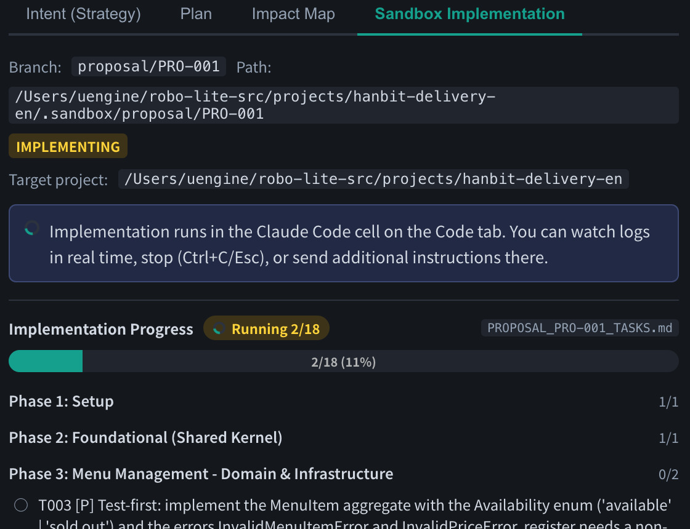
| Phase | Tasks |
|---|---|
| 1 Setup | Monorepo, import rules |
| 2 Kernel | SQLite, migrations, errors |
| 3–4 Menu | MenuItem, commands, API |
| 5–6 Ordering | OrderDraft · Order, API |
| 7 Frontend | Menu and order screens |
| 8 Test | API tests, packaging |
backend/src/modules/menu-management · ordering · backend/src/shared · backend/migrations · frontend/src/features/menu · orderingFinished tasks do not prove the code follows the design. Structural validation uses the robo-sync extractor to find the design's aggregates, fields, commands and events in the code. Acceptance criteria validation checks each Given · When · Then against code and tests, with evidence.
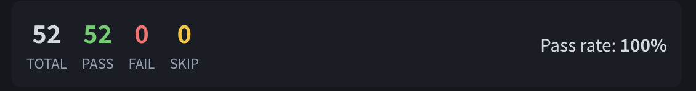
| Type | Checks | PASS | FAIL | SKIP |
|---|---|---|---|---|
| Acceptance criteria | 24 | 24 | 0 | 0 |
| Structural | 28 | 28 | 0 | 0 |
| Total | 52 | 52 | 0 | 0 (pass rate 100%) |
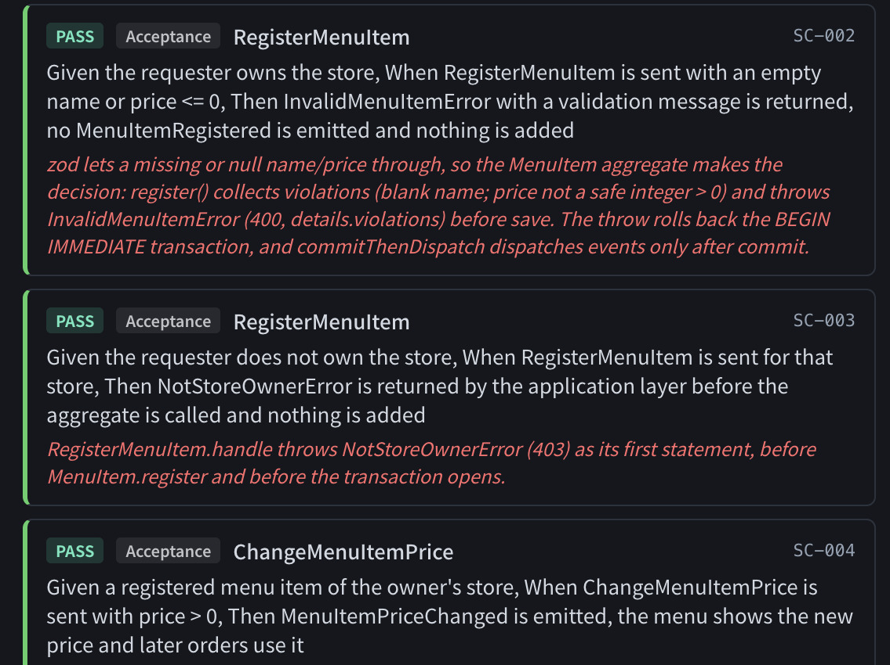
A SKIP is a check that could not be matched automatically. This run had none: every command had its own input type, so all 10 were matched field by field. SKIPs count in the pass-rate total.
A FAIL needs confirmation. Accept is enabled only after “I acknowledge the failures and will proceed with Accept,” and the choice is recorded.
| Action | What happens |
|---|---|
| Accept (Dual Merge) | Merges the branch and writes the strategic and tactical design to the graph. If the graph update fails, the merge is undone and marked as failed |
| Revoke (Undo) | “Graph only” or “Graph + Code” (a git revert of the merge) |
| Destroy | Discards without accepting; cleans up the workspace, keeps the history |
Most development changes an existing design. In a project with an accepted design, a new proposal separates new elements (CREATE) from modified ones (MODIFY) and shows the conflict risk where implemented elements change.
For PRO-002 we entered a new rule: a store owner who rejects an order picks one reason, and the customer sees it. INTENT (70 seconds) added the feature Store Order Rejection and two stories to the existing Ordering context, with no new context. The Plan (about 7 minutes) kept PRO-001's deployment unit, libraries and folder layout.
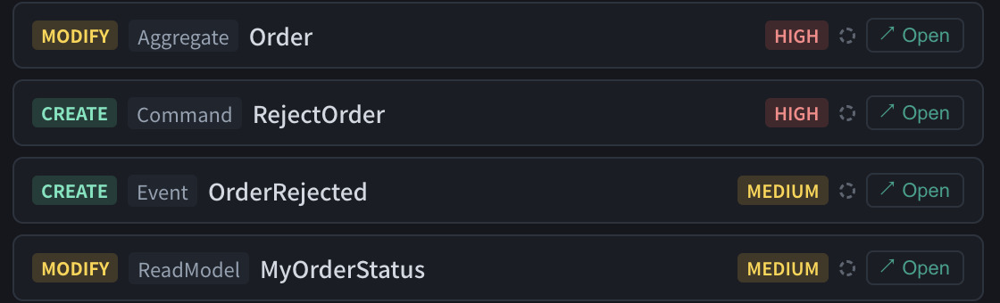
| Operation | Element | Conflict risk | Change |
|---|---|---|---|
| MODIFY | Aggregate Order | HIGH | Rejected status, RejectionReason enum and property, 3 invariants |
| CREATE | Command RejectOrder | NONE | Rejects an order with one reason |
| CREATE | Event OrderRejected | NONE | Order rejected |
| MODIFY | Read model MyOrderStatus | NONE | Shows the reason to the customer |
Business rules are often recorded more precisely in code than in documents. Robo Architect analyzes legacy code into a graph of classes, methods, tables and business rules, and links each element of a new proposal to the code it is based on.
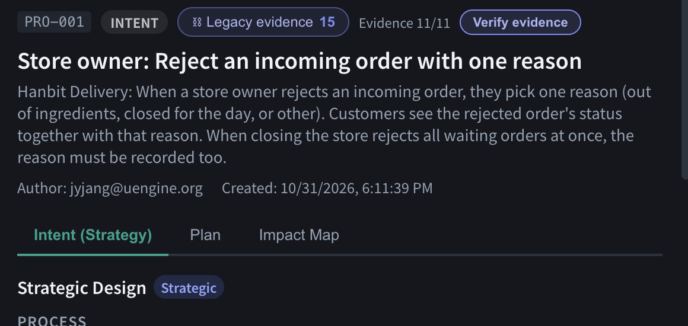
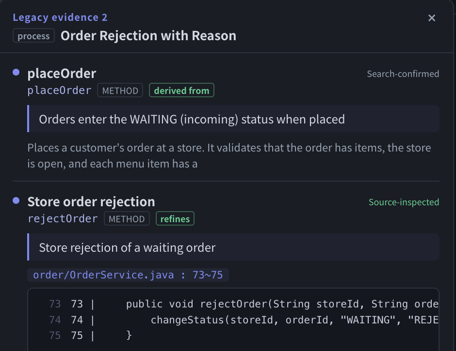
| Mark | Meaning |
|---|---|
| derived from · refines | Comes from / changes old behavior |
| Source-inspected | Opened in the source |
| Search-confirmed | Seen in search results |
| File : line | Where the evidence points |
| Cited by n elements | New elements relying on it |
StoreService.close returns how many waiting orders it rejected, the design gained the criterion “I am told that 3 orders were rejected.” Existing DBs can also be registered as data sources (PostgreSQL · MySQL · MariaDB).Robo Architect Lite consists of the desktop app, the Architect API running on your PC and seven Docker containers. The app starts the containers itself and leaves them running after you quit, so the next start is faster. AI work is done by Claude Code on your PC.
proposal/PRO-NNN worktrees| Container | Group | Role |
|---|---|---|
| graph-db graph-bolt | Ontological DB | Stores the design graphs and the analysis graph, one graph per project. graph-bolt is the Bolt protocol entry point; it passes queries to the graph engine without keeping state |
| fabric catalog | Data fabric | Connects registered existing DBs to the graph DB and provides table, column and relationship information |
| analyzer parser gateway | Legacy analysis | Parses code (ANTLR) and analyzes its meaning and business rules. The analyzer's AI calls go through the Architect API and are handled by Claude Code |
The product uses widely adopted frameworks and open-source technology, so your team can understand and maintain it. The AI's procedures live in skill files, apart from product code.
| Layer | Components |
|---|---|
| Desktop | Electron 33 · electron-builder 25 (Windows NSIS · macOS DMG) · TypeScript |
| Frontend | Vue 3.5 · Vite 5 · Pinia · Vue Flow (canvas) · bpmn-js 18 · Mermaid 11 · Tailwind CSS 4 · CodeMirror 6 · xterm.js 6 |
| Backend | Python 3.11+ · FastAPI · Uvicorn · Pydantic v2 · SSE (server-sent events) · MCP |
| Graph DB | Ontological DB — graph engine and Bolt gateway, Cypher queries |
| AI execution | Claude Code CLI (skills · Code tab cell) · OpenAI-compatible connector for the analyzer |
| Analysis | Legacy analyzer · ANTLR parser · data fabric · data catalog · API gateway |
| Testing | pytest · Playwright · ruff |
| Bundle | Skills |
|---|---|
| robo-proposals 15 | Stages — intent · project-constitution · plan · tasks · implement · test · context (impact)Detailed DDD — scope · discover · decompose · strategize · connect · define · tacticalStandards — oda |
| robo-spec 4 | robo-implement (build in the Code tab cell) · robo-sync (code → design check) · robo-plan · robo-tasks |
| robo-changes 2 | robo-change-specify · robo-change-tasks (requirement changes) |
Open a project, write a proposal, review the design and plan, then implement, validate and accept. Below are the six steps on real product screens, with demo data (tutorial exercise).
On Home, enter a project name (e.g. hanbit_delivery_en) and choose a Git repository as the code folder. Open project points the backend at this project's graph and enables the feature cards.
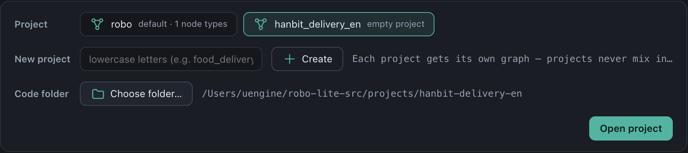
In the Proposals tab, click + New Proposal and describe the change. Choose a mode (Simplified · Detailed DDD · ODA Standard) and click Start AI Analysis.
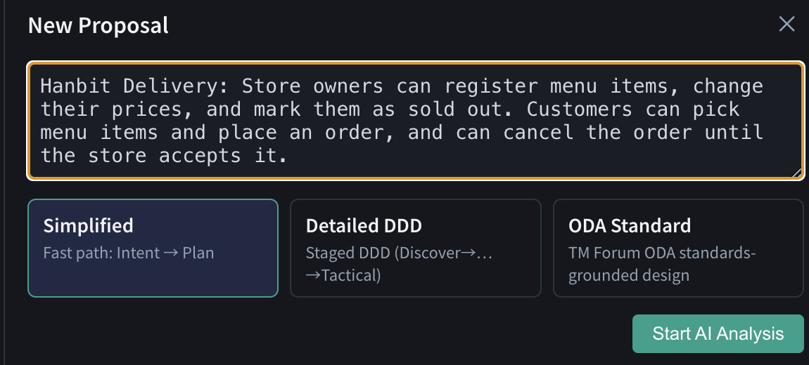
The progress window shows what Claude Code is doing. Then review the strategic design and Impact Map, and regenerate with feedback if needed.
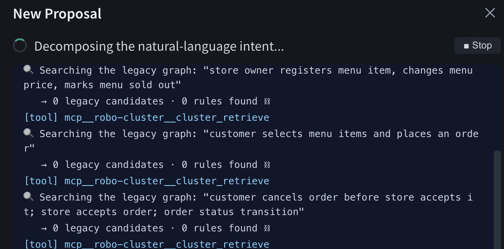
Click Proceed to Plan →, then Generate Plan. If the project has no design principles yet, an interview opens first. Review the architecture decisions and tactical design, then click Confirm Plan; Open Sandbox Implementation appears.
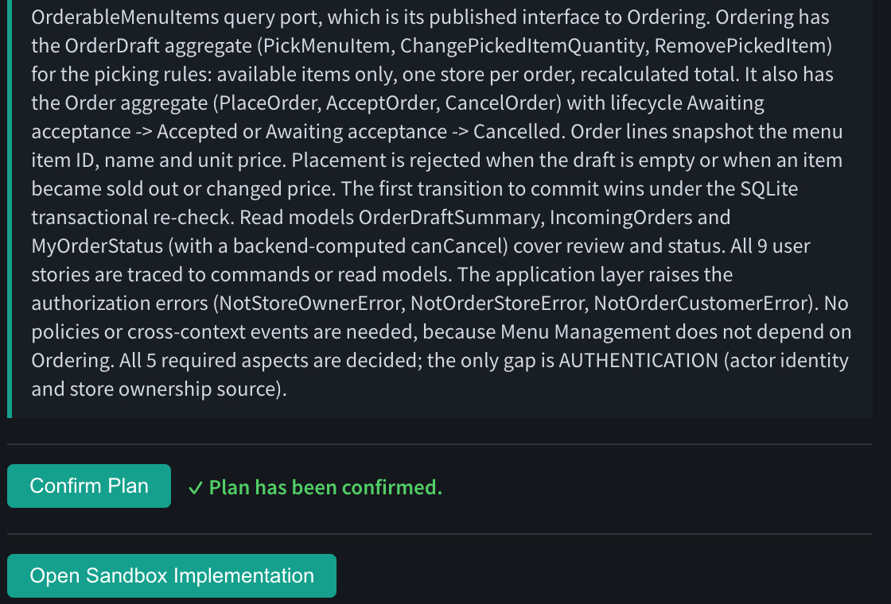
Click Generate task list, then Start implementation. Go to Claude Code cell opens the proposal's cell in the Code tab, where the work starts and you can follow file writes, tests and commits.
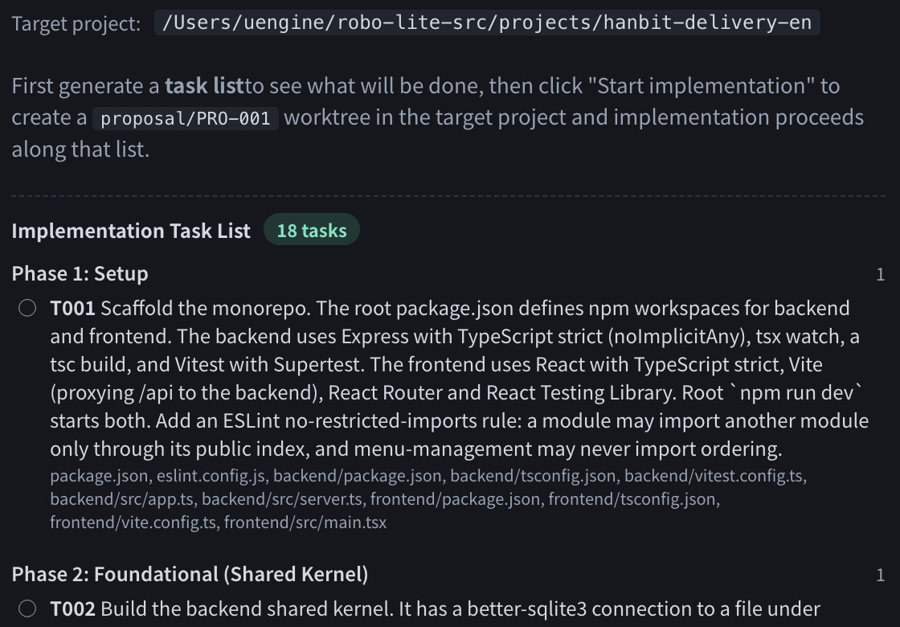
When the build is done, click Done → Verify. Check the structural and acceptance criteria results, then click Accept (Dual Merge): code and graph DB are updated together, and the status becomes ACCEPTED.
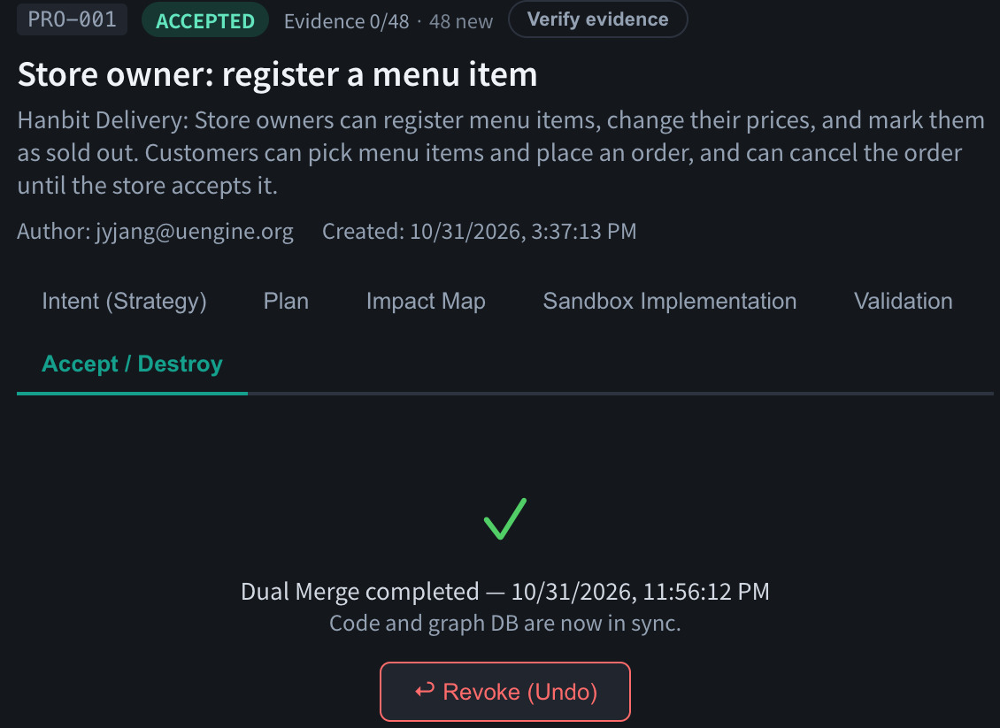
Robo Architect Lite is a desktop app that runs on the user's PC. Before adoption, review the scope of data processing and the change approval procedure against the points below.
| Item | Details |
|---|---|
| Plan check | Implementation needs a Plan confirmed against the latest design principles |
| Code isolation | Work happens in a branch worktree; the target branch is untouched until Accept |
| Conflict detection | Plan submission is blocked if another proposal is building the same element |
| Failure check | With any FAIL, Accept requires acknowledging the failures |
| Combined update | If the graph update fails, the code merge is undone and marked as failed |
| History · logs | Each status change records who and when; each request gets a tracking ID |
Robo Architect Lite runs as one desktop app and seven Docker containers. The app loads and starts the container images itself, so there is no Python or database to install.
| Platform | Contents | Availability |
|---|---|---|
| Windows 10/11 | Installer (about 100 MB), image bundle (about 1.5 GB, 7 images), SHA256SUMS. Per-user install, no admin rights | Provided on request |
| macOS | Desktop app for Apple Silicon (DMG) | Installer being prepared for release |
| First run | Checks the bundle's checksum, loads it and starts the 8 containers: about 50 s on the tutorial PC, 4–5 min on an installed copy's first run | — |
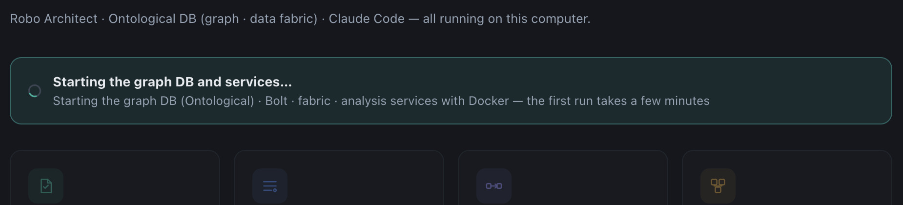
macOS or Windows 10/11, 16 GB of memory or more, 20 GB of free disk space or more.
Keep it running while you use the app: the graph DB and services are containers.
Run claude in a terminal and sign in first. It analyzes, plans and implements.
The code folder must be a Git repository; each proposal gets a worktree of it.
The Robo Architect team follows one process from spec to implementation and testing. Each feature starts with a spec and a plan, and results are checked by automated tests and in the running app.
Each feature goes from spec to plan to task list to implementation, and all of these stay in the repository: currently 59 feature folders with 58 specs, 42 plans and 39 task lists.
The regression suite (npm run test:regression) has 2 logic unit tests and 12 UI tests that replace server responses with fixed data. Static analysis uses ruff.
The 14-chapter tutorial's screens and results come from the Lite app running on macOS (Apple Silicon). Stage times:
| Stage | Time | Result |
|---|---|---|
| INTENT (one sentence) | 127 s | 2 processes · 2 contexts · 9 stories |
| Plan generation | 693 s | 28 tactical items, including 3 aggregates |
| Implementation | About 35 min | 18 tasks · 18 commits |
| Validation to acceptance | About 8 min | 52 checks: 52 PASS · 0 FAIL · 0 SKIP |
| Legacy analysis | 141 s | 6 classes · 18 methods · 7 tables |
| Change proposal PRO-002 | 70 s + 404 s | INTENT + Plan; Order MODIFY, risk HIGH |
| Requirements document | 161 s | 5 contexts · 10 features · 17 stories |
Robo Architect builds on experience developing and operating MSAEZ (MSA Easy), an EventStorming-based design and code generation tool used in industry, on a public platform and in education.
POSCO DX uses MSAEZ to design applications and microservices and generate their source code, producing code from design models derived through EventStorming.
The DPG (Digital Platform Government) Integrated Testbed, run by Korea's National Information Society Agency (NIA), helps SMEs, startups, citizen developers and public bodies develop, test and verify services with public and private data, cloud resources and private-sector SaaS tools.
MSA Easy (MSAEZ) is registered there as a SaaS that automates microservice analysis, design, implementation and deployment.
MSAEZ is the standard practice tool at MSA School, a cloud-native development training provider. Learners design a domain with EventStorming, then generate code from the model and deploy it.
Training to date: 325 sessions, 9,655 learners, 17,864 hours, at basic, intermediate and advanced levels, covering Biz (EventStorming · DDD), Dev (Spring Boot · Kafka) and Ops (Kubernetes · GitOps).
| Area | MSAEZ (base product) | Robo Architect Lite |
|---|---|---|
| Design · build | EventStorming design, code from the model | DDD design per proposal, built and validated with Claude Code |
Adoption runs in four phases, from an environment review and a PoC (proof of concept) to full rollout. The schedule below is a standard example, adjusted to your environment and review process.
Claude Code accounts, policy and data handling scope.
Repositories to work in and the final merge branch.
Standards for stack, architecture and repository layout.
Your design procedures and document formats, built in.
Contact us about adoption, a product demo or a quote. Our specialists reply within one business day, and we can also schedule a product demo for you.